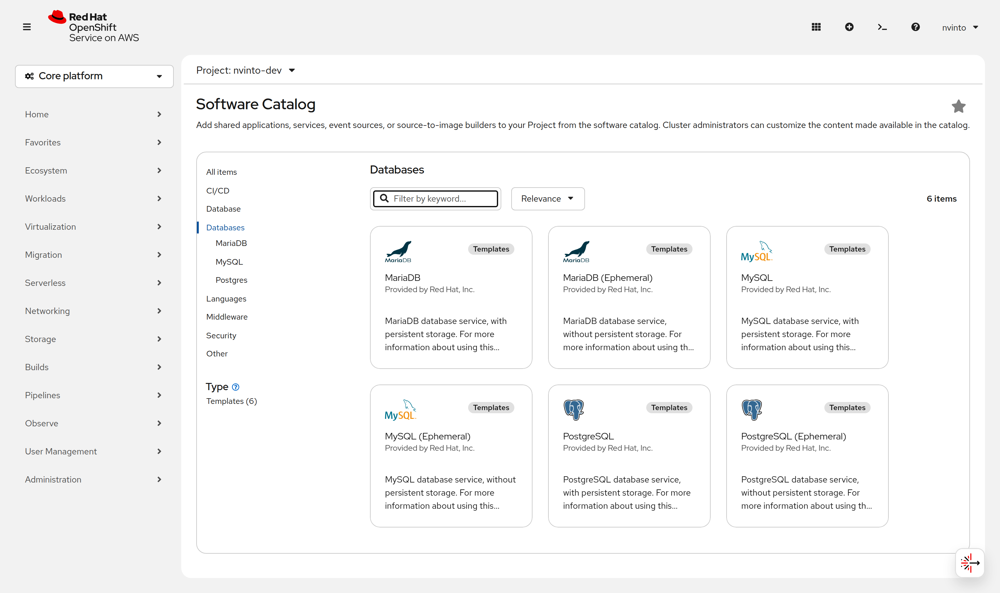
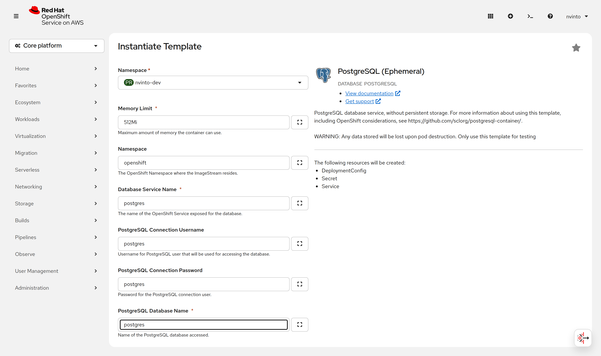

Adapt configurations
Now that we benefit from the developer experience given by Quarkus, let’s adapt the application code per requirements specified initially.
Create Message Entity
Create a new Message Java class in src/main/java in the com.redhat.developers package with the following contents:
package com.redhat.developers;
import com.fasterxml.jackson.annotation.JsonInclude;
import io.quarkus.hibernate.orm.panache.PanacheEntity;
import jakarta.persistence.Entity;
@Entity
@JsonInclude(JsonInclude.Include.NON_NULL)
public class Message extends PanacheEntity {
private String content;
private String language;
private String country;
public String getContent() {
return content;
}
public void setContent(String content) {
this.content = content;
}
public String getLanguage() {
return language;
}
public void setLanguage(String language) {
this.language = language;
}
public String getCountry() {
return country;
}
public void setCountry(String country) {
this.country = country;
}
}Notice that we’re not providing an @Id, nor we’re creating the getters and setters. Don’t worry. It’s a Panache feature. By extending PanacheEntity, we’re using the Active Record persistence pattern instead of a DAO. This means that all persistence methods are blended with our own Entity.
Modify GreetingResource
As we want to interact more with our application, let’s change the behavior of the GET endpoint and add a new endpoint that supports POST.
package com.redhat.developers;
import java.util.List;
import jakarta.transaction.Transactional;
import jakarta.ws.rs.Consumes;
import jakarta.ws.rs.GET;
import jakarta.ws.rs.POST;
import jakarta.ws.rs.Path;
import jakarta.ws.rs.Produces;
import jakarta.ws.rs.core.MediaType;
@Path("messages")
public class GreetingResource {
@POST
@Produces(MediaType.APPLICATION_JSON)
@Consumes(MediaType.APPLICATION_JSON)
@Transactional
public Message create(Message message) {
Message.persist(message);
return message;
}
@GET
@Produces(MediaType.APPLICATION_JSON)
public List<Message> findAll() {
return Message.findAll().list();
}
}Modify GreetingResourceTest
Since Dev mode is enabled and if you pressed r to run Continuous Testing, you will also see a test failure:
the generated test still asserts the Hello from Quarkus REST string, which the endpoint no longer returns.
To fix the test failure, modify GreetingResourceTest as follows:
package com.redhat.developers;
import io.quarkus.test.junit.QuarkusTest;
import io.restassured.http.ContentType;
import org.junit.jupiter.api.Test;
import static io.restassured.RestAssured.given;
import static org.hamcrest.CoreMatchers.notNullValue;
@QuarkusTest
class GreetingResourceTest {
@Test
public void testCreate() {
Message message = new Message();
given().contentType(ContentType.JSON).body(message)
.when().post("/messages")
.then()
.statusCode(200)
.body(notNullValue());
}
}Zero Config Database Setup
Quarkus can even provide you with a zero-config database out of the box when testing or running in dev mode, a feature we refer to as Dev Services. Depending on your database type, you need a container runtime (Podman or Docker) to use this feature.
To use Dev Services, all you need to do is include the relevant extension for the type of database you want (either reactive or JDBC, or both), without configuring any database URL, username, and password.
Quarkus will provide the database. You can just start coding without worrying about config.
If you are using a proprietary database such as DB2 or MSSQL you will need to accept the license agreement. To do this create a src/main/resources/container-license-acceptance.txt file in your project and add a line with the image name and tag of the database.
|
More on zero config setup of datasources can be found here.
Dev Services are enabled by default, but you can disable them by going to application.properties and setting quarkus.datasource.devservices.enabled to false.
|
Add the following database properties to your application.properties so that it looks like:
# Configuration file
# key = value
quarkus.hibernate-orm.sql-load-script=import.sql
quarkus.datasource.db-kind = postgresql (1)
quarkus.container-image.builder=jib
quarkus.hibernate-orm.schema-management.strategy = drop-and-create (2)
%dev.quarkus.hibernate-orm.log.sql=true
%dev.quarkus.hibernate-orm.log.bind-parameters=true (3)
%prod.quarkus.datasource.username = ${POSTGRES_USERNAME:postgres} (4)
%prod.quarkus.datasource.password = ${POSTGRES_PASSWORD:postgres}
%prod.quarkus.datasource.jdbc.url = jdbc:postgresql://${POSTGRES_SERVER:postgres}:5432/postgres
%prod.quarkus.hibernate-orm.log.sql = false| 1 | With Dev Services enabled, no JDBC URL needs to be provided in Dev Mode. In this case, we input the URL to ensure consistency across all application run modes. |
| 2 | quarkus.hibernate-orm.database.generation is deprecated. Using it still works but logs
The "quarkus.hibernate-orm.database.generation" config property is deprecated and should not be used anymore.
at every start. |
| 3 | The property is log.bind-parameters, not log.bind-param. The short form is silently ignored,
so you would simply never see the bound values in the SQL log. |
| 4 | Only for prod application profile the database credentials are needed. |
Create import.sql file in src/main/resources with the following content:
insert into Message(content, country, language, id) values('Hello', 'United Kingdom', 'en', 1);
insert into Message(content, country, language, id) values('Hola', 'Spain', 'es', 2);
insert into Message(content, country, language, id) values('Salut', 'Romania', 'ro', 3);
insert into Message(content, country, language, id) values('Bonjour', 'France', 'fr', 4);
alter sequence Message_SEQ restart with 100; (1)| 1 | PanacheEntity takes its ids from the Message_SEQ sequence, which starts at 1. Without this line
the first POST /messages fails with a duplicate primary key, because rows 1–4 were just inserted
by hand. |
Setting up a test profile
As our tests should run a similar configuration to what we plan to use with the production profile,
we should setup a test profile in application.properties:
%test.quarkus.datasource.db-kind=h2
%test.quarkus.datasource.username=username-default
%test.quarkus.datasource.jdbc.url=jdbc:h2:mem:default;DB_CLOSE_DELAY=-1
%test.quarkus.hibernate-orm.dialect=org.hibernate.dialect.H2Dialect
%test.quarkus.datasource.jdbc.min-size=3
%test.quarkus.datasource.jdbc.max-size=13
%test.quarkus.datasource.jdbc.driver=org.h2.DriverAnd the following pom.xml dependencies for it:
<dependency>
<groupId>io.quarkus</groupId>
<artifactId>quarkus-jdbc-h2</artifactId> (1)
<scope>test</scope>
</dependency>
<dependency>
<groupId>io.quarkus</groupId>
<artifactId>quarkus-test-h2</artifactId> (2)
<scope>test</scope>
</dependency>| 1 | Provides the org.h2.Driver class referenced by %test.quarkus.datasource.jdbc.driver.
Without it the build fails before any test runs, with
ConfigurationException: Unable to load the datasource driver org.h2.Driver. |
| 2 | Starts an H2 server for Dev Services. It does not bring the JDBC driver with it, which is why both dependencies are needed. |
With the test profile now pointing at an in-memory H2 database, ./mvnw test no longer needs the
PostgreSQL Dev Services container.
Create your database setup in OpenShift
In order to setup your production database in Developer Sandbox, please do the following steps:
-
in the left hand side menu open Ecosystem → Software Catalog
-
filter by the Templates type and search for
postgresql, then pick PostgreSQL (Ephemeral)

-
click on
Instantiate Templateand fill in the following details, leaving everything else at its default:
| Field | Value |
|---|---|
Database Service Name |
|
PostgreSQL Connection Username |
|
PostgreSQL Connection Password |
|
PostgreSQL Database Name |
|

These are the values the %prod datasource defaults to
(${POSTGRES_USERNAME:postgres}, ${POSTGRES_PASSWORD:postgres},
jdbc:postgresql://${POSTGRES_SERVER:postgres}:5432/postgres), so naming the service postgres
is what makes the application find the database without any extra environment variable.
|
OpenShift 4.21 removed the Developer and Administrator perspectives in favour of a single Core platform navigation. What used to be +Add → Developer Catalog is now Ecosystem → Software Catalog. |
Wait until the database Pod is ready:
oc rollout status dc/postgresWarning: apps.openshift.io/v1 DeploymentConfig is deprecated in v4.14+, unavailable in v4.10000+
replication controller "postgres-2" successfully rolled out|
The shipped |